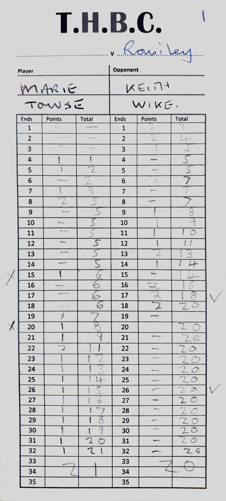

Trades Hall Bowling Club - Latest news
This is the place for the latest from Trades Hall Bowling Club
End of Season Comp at Trades Hall Bowling Club - Saturday 28th September
It starts at 10pm. It will be a Round-Robin pairs competition with food and prizes. Hope to see you there!
September 2024

Well done Marie!
20 - 06 down and to come back to win. So never give up.
July 2024

Replacing the spike tines with knife tines for the winter months
'Spiking'and 'Slitting' are important tasks for our green maintenance. In particular helping water penetration and venting -
letting bad gas out and good gas in*
*Note: as we all know, grass doesn't grow in soil but in the spaces between the soil particles.
November 2023
Indoor Bowling information - The green is now closed but if you fancy keeping your eye
and muscle co-ordination in good nick over the winter, you could have a go at indoor bowling.
Trades Hall have two teams entered and we play at Chapel-en-le-Frith High School, Long Lane, SK23 0TQ.
The games are played on Saturday morning, start time: 9.15am or 11.15am and are for 2 hours maximum.
If you are interested in being registered for the indoor games, please contact: Bob Stanway or Don Mcewen.
If you don't have their details, please contact the club via the email button on this site. Thanks
October 2023
Thanks - Thank you for responding to the request below.
As we found it on the day, the green wasn't very 'thatchy' but it was enough for two passes at medium depth. Thanks again for your efforts.
October 2023
Reminder - The green is due to be scarified on Thursday 5th October, starting at 10am.
If you havn't already offered to join the work party, all help will be welcomed. Thanks.
October 2023

To all THBC members - tree debris! With the autumn/winter seasons approaching, please can you help with clearing of the beech nuts plus
leaves off the green and out of the gutters.
If you can spare a couple of hours, at anytime during the autumn and winter seasons - great. Much appreciated.
August 2023